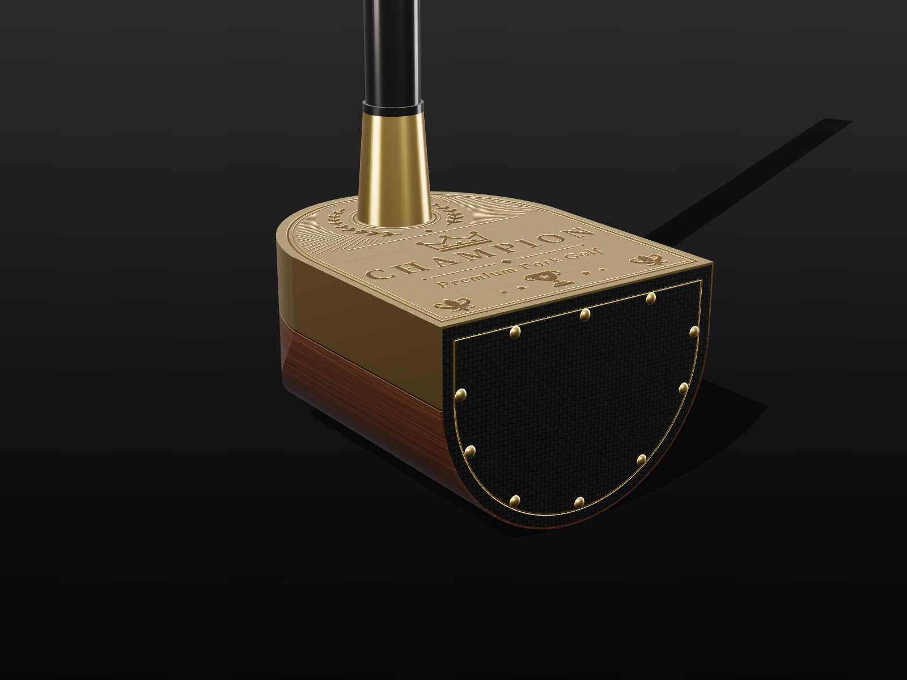
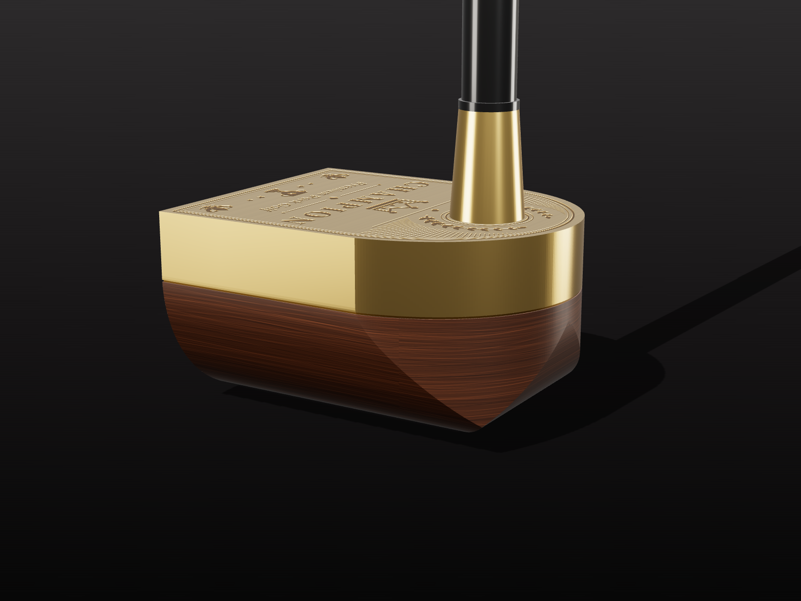
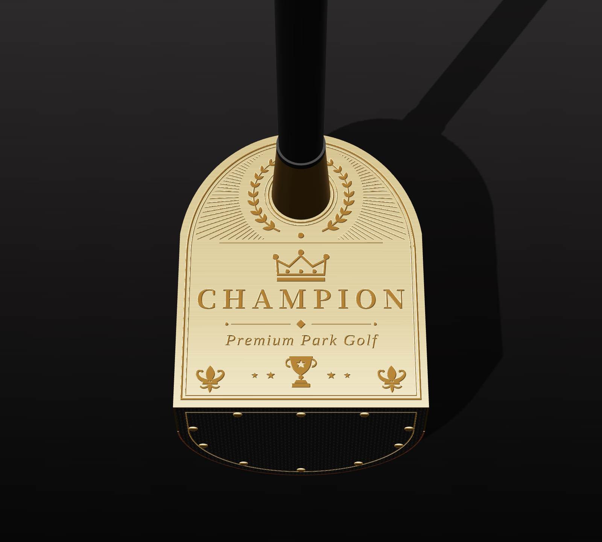
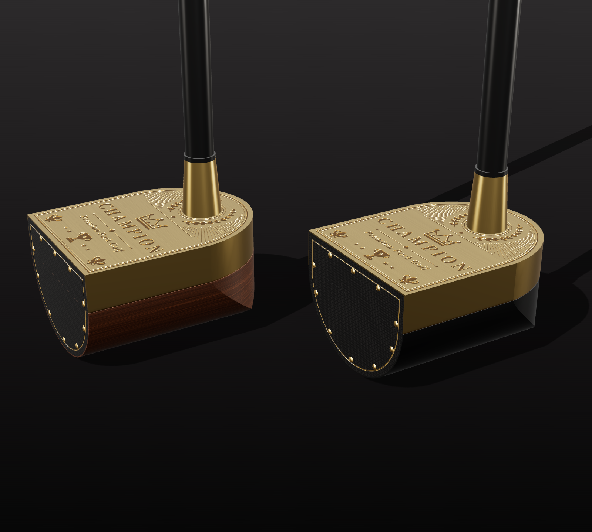
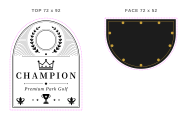

CHAMPION · 파크골프 헤드 디자인 II
골드 각인 캡 · 월넛 바디 · 카본 페이스 & 골드 핀

페이스 3/4 · D형 카본 페이스 + 골드 핀 10개

토우 측면 · 골드 캡 + 라운드 월넛 바디

상단 각인 · 월계관 속에서 샤프트가 올라오는 구조

A 골드 월넛 · B 골드 누아르(블랙)

각인 원본 (AI 파일): 상단 72×92 · 페이스 72×52 mm
검정 = 각인 / 분홍 점선 = 재단선
각인 도면